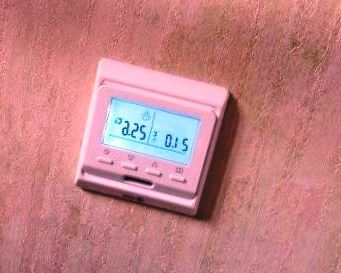

Качественный электромонтаж в Санкт-Петербурге и ленобласти, стаж 12 лет. Частный электрик, недорого и качественно.
Телефон - 8 904 642 08 57. Николай.

Электрический обогрев пола.
Частный электрик в СПБ. Позвоните!
Интересная информационная статья об особенностях популярной услуги. В тексте описаны этапы работы, а также преимущества. Раскрываются особенности услуги. Даны полезные рекомендации.
Проводя ремонт ванной комнаты, нельзя обойтись без такого вида работ как укладка плитки на пол. Плиточный пол хорошо проводит тепло, и поэтому ногами ощущается холод. По этой причине под кафельный пол часто хотят сделать обогрев, в особенности в ванных комнатах.

Обогрев пола можно сделать либо как часть центрального водяного обогрева, либо с помощью электричества. Ремонт ванной требует квалифицированного подхода. В обоих случаях эти работы должны производить профессионалы, прошедшие специальное обучение. Тем не менее, некоторые решения по электрообогреву пола, относящиеся к ремонтным работам, можно произвести самостоятельно. Использование диэлектрической плёнки, идущей прямо под облицовкой, основано на технике малых напряжений, установка устройств, относящихся к этой области, не требует специальных разрешений.
Сколько стоит сделать электрический обогрев пола?
Площадь пола в кв. м. |
Цена за кв. м. в руб. |
До 10 кв. м |
От 700 руб. |
20. |
650. |
30. |
600. |
40. |
550. |
До 50 кв. м. |
500. |
От 50 кв. м. |
От 450. |
Сделать стяжку. |
От 380 руб. |
Для того чтобы достигнуть максимального эффекта от подогрева пола и сохранить тепло, обогревательные трубы или нагревательные элементы размещают в наиболее массивной части конструкции.
Проводя ремонт санузла, часто встречается проблема - литая бетонная часть (что часто бывает во влажных помещениях), тогда элементы размещают на глубину примерно 25 мм от верхней поверхности пола. На практике чаще всего это реализуется таким образом, что заливка бетона осуществляется в два приёма: сначала производят черновую заливку, на поверхность которой укладывают трубы или нагревательные элементы, и затем укладывают тонкий слой поверхностного бетона, который покрывает трубы или нагревательные элементы.
Электрический обогрев полов в санузле.
Другой способ для изготовления этой части пола – это создание трёхслойной структуры из строительных плит. Ведь зачастую отделка ванной требует творческого подхода. Этот метод особенно хорош при производстве ремонтных работ, при которых не всегда имеется возможность осуществлять трудоёмкие бетонные работы. Наиболее часто используемые плиты – гипсокартон. Волокнисто-цементные и древесно-гипсовые плиты также хорошо подходят для этой цели. Самый нижний слой плит делается сплошным, плотно крепится к основе. К плите основы этот слой крепится сквозными винтами. Второй слой плит делается из кусков плит, в промежутках которых оставляются проёмы для труб или нагревательных элементов. Куски плит крепятся либо с помощью длинных винтов прямо к старой основе, либо раствором к нижней плите. Трубы или нагревательные элементы устанавливаются в промежутки между плит, которые после этого заделываются соответствующим раствором. Сверху на второй слой на растворе крепится сплошной слой плит, который уже служит конечной поверхностью пола под облицовку.
Тёплый мат – это техническое решение, при котором нагревательный элемент находятся под невысоким напряжением.
На сегодняшний день это самый прогрессивный метод. Проводя такой вид ремонта как ванная по ключ” и монтаж электрического пола – неразделимые понятия. Невысокое напряжение означает, что монтажные работы может производить не только специализированное предприятие, но и другие лица.
Тёплый мат устанавливается непосредственно под облицовку и практически не увеличивает толщину пола. Этот способ обогрева пола особенно хорошо подходит для случаев, для которых вышеописанные технологии непригодны, при ремонте, когда прямо на старую облицовку кладётся новая плитка или когда основа не позволяет из-за слишком большого подъёма поло произвести укладку труб или кабелей. Использование тёплого мата, прежде всего – дополнительное удобство, так как он нагревает поверхность пола. При этом тепловыделение больше, чем у других способов обогрева пола.
 Поменять проводку в квартире.
Поменять проводку в квартире. Сколько будут стоить материалы.
Электрика в загородном доме стоимость работ.

Замена электропроводки в панельном доме.
Расценки на электропроводку квартир.
Замена проводки в хрущевке.
Электромонтаж в частном доме.
Электрика в загородном доме.
Сколько стоит замена электропроводки в двухкомнатной квартире?.
Электрик в новостройку однокомнатная квартира недорого.

Сколько стоит поменять электропроводку в 3-х комнатной квартире.